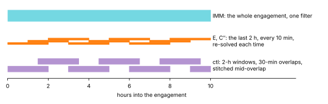
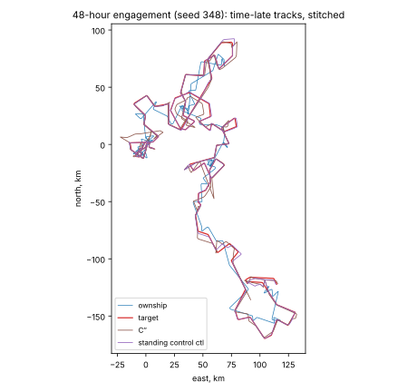
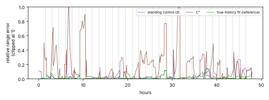
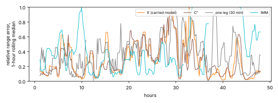
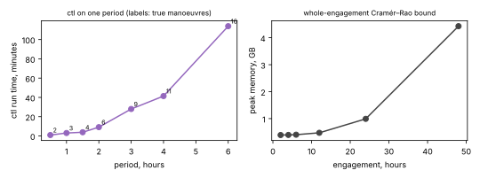

Longer engagements: 6 to 48 hours
2026-11-17 · spec 023, issue #42 · an investigation, not a gate · gitma2
Overview: run what we have, on windows
- Every system was built for 40–120 minutes and one ownship zig
- A new simulator (seed 348): Annex B targets, an ownship that turns every 20–40 min and keeps the target at 3–25 km
- Real-time: the last 2 hours, every 10 min; IMM over everything
- Time-late: ctl on 2-hour windows, stitched

Time-late over 48 hours

Seed 348, engagement 3 (48 h; 106 target manoeuvres, 92 ownship turns). Ownship blue, target red.
Time-late error against time

Stitched ctl: median range error 1.6% over 48 h (2.0, 1.9, 2.7% over 6, 12, 24 h); C″ 9.0%; the true-history fit 1.2%. Grey lines: window starts. No penalty at the seams.
Real-time error against time

One-hour rolling median. Every 10 min: E 20.9%, C″ 19.9%, IMM 30.9% (answers 81%), one leg 34.9% median over 48 h. Errors swing with the geometry; the IMM degrades in the last 12 h.
What it costs

Left: ctl on one period of the 24-h engagement, 1 min (0.5 h) to 114 min (6 h); its search stops at ten manoeuvres. Right: the whole-engagement bound needs 4.5 GB at 48 h. Real-time: 27–37 s per estimate; the IMM over 48 h, 426 s.
Not achieved
- One engagement per duration: anecdotes, not rates
- The ownship steers on the true target; contact is never lost; one target throughout
- No whole-engagement solve: ctl's search caps at ten manoeuvres and its run time grows faster than the period
- E is not run in the browser on these engagements; the pages show Python's estimates
Next (the owner's choice)
- Recommended: carry state across windows (each window starts from the last one's solution and prior), then a fixed-lag time-late search
- An incremental C (keep confirmed legs, drop old ones) so a real-time estimate costs the same at hour 48 as at hour 2
- Realism before rates: ownship steering on its own solution, contact gaps, a second target
Research note: docs/research/12-long-engagements.md · Record: experiments/20261117-long/ · Figures: scripts/research/long_charts.py, sidecars next to each SVG